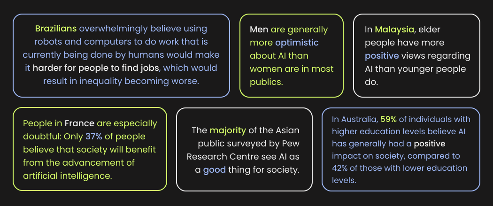

You have arrived to Virtually Human. I’m thrilled to have you here. In this space, we'll be delving into the world of Artificial Intelligence (AI). Our journey will explore the rise of AI, its history, importance, limitations, risks, and much more. Together, we'll uncover the story behind AI, understanding how it has evolved and why it matters in today's world. So, buckle up for an enlightening journey filled with knowledge and discovery.
Artificial Intelligence, often abbreviated as AI, is a technology that allows machines to mimic human intelligence. These machines are programmed to understand, learn, and solve problems in the same way as humans do. AI assists computers in processing information, recognising patterns, and making judgements, making them intelligent and capable of activities that would normally need human thought. This technology is employed in a variety of applications, ranging from voice assistants to self-driving automobiles, to improve the convenience and efficiency of our lives.
Exploring the realm of AI wouldn't be complete without acknowledging the diverse perspectives of people worldwide. It's essential to consider the global landscape to truly grasp the impact of artificial intelligence. So, let's take a moment to delve into some intriguing numbers that shed light on this vast and varied world.
Duolingo Team (2023) Introducing Duolingo Max, a Learning Experience Powered by GPT-4, Duolingo Blog. Available at: https://blog.duolingo.com/duolingo-max/ (Accessed: 28 October 2023).
Funk, C. et al. (2020) Publics Express a Mix of Views on AI, Childhood vaccines, Food and Space Issues, Pew Research Center Science & Society. Available at: https://www.pewresearch.org/science/2020/09/29/publics-express-a-mix-of-views-on-ai-childhood-vaccines-food-and-space-issues/ (Accessed: 28 October 2023).
Introducing Notion AI (2023) Notion. Available at: https://www.notion.so/product/ai (Accessed: 28 October 2023).
Martin, N. (2019) 13 Best Quotes about the Future of Artificial Intelligence, Forbes. Available at: https://www.forbes.com/sites/nicolemartin1/2019/06/27/13-greatest-quotes-about-the-future-of-artificial-intelligence/?sh=53fd50b43bdf (Accessed: 28 October 2023).
OpenAI (2022) Introducing ChatGPT, OpenAI. Available at: https://openai.com/blog/chatgpt (Accessed: 28 October 2023).
Vogels, E.A. (2023) A Majority of Americans Have Heard of ChatGPT, but Few Have Tried It Themselves, Pew Research Center. Available at: https://www.pewresearch.org/short-reads/2023/05/24/a-majority-of-americans-have-heard-of-chatgpt-but-few-have-tried-it-themselves/#:~:text=People (Accessed: 28 October 2023).